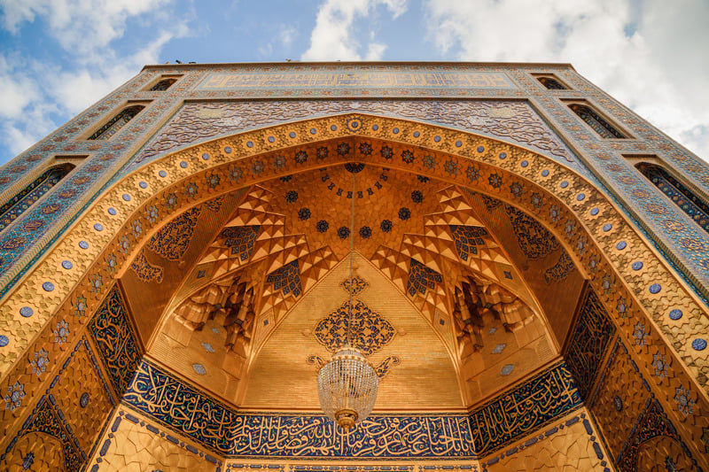

Mashhad
Home to the holy shrine of Imam Reza (AS), Mashhad is one of the most important pilgrimage destinations in the Islamic world, surrounded by bazaars and spiritual energy.
Home to the holy shrine of Imam Reza (AS), Mashhad is one of the most important pilgrimage destinations in the Islamic world, surrounded by bazaars and spiritual energy.
A major religious center with seminaries, shrines, and traditional streets where history, scholarship, and faith come together.
Iran’s lively capital blends museums, modern cafés, and bazaars with views of the Alborz mountains and a dynamic urban culture.
Famous for its turquoise domes, historic bridges, and grand squares, Isfahan is often called “half the world” for its beauty and heritage.
A desert-edge city known for elegant historic houses, traditional baths, and rosewater fragrance during spring.
Adobe alleys, windcatchers, and Zoroastrian heritage make this desert city feel timeless under glowing desert skies.
Known for poetry, gardens, and nearby Persepolis, Shiraz captures the romantic, artistic spirit of Iran.
Once a key Silk Road hub, Tabriz offers a UNESCO-listed bazaar, rich Azeri culture, and mountain landscapes.
Gateway to the Lut Desert and historic citadels, Kerman mixes desert adventure with centuries of trading history.
One of Iran’s oldest cities, associated with ancient Ecbatana and surrounded by fresh mountain air.

A culinary capital in the lush north, Rasht offers vibrant food culture and easy access to forests and the Caspian.
A former royal capital with caravanserais, calligraphy heritage, and quick access to Alamut Valley.
Where the Caspian Sea meets forested mountains, Ramsar is perfect for cable cars, hot springs, and sea views.
A bustling port city on the Persian Gulf with coastal promenades and access to southern islands.

Known for dramatic rock formations, mangrove forests, and geosites, Qeshm is an eco-adventurer’s paradise.
A relaxed island escape with clear waters, coral beaches, and cycling paths along the shoreline.
123 Anywhere St.
Any City, ST 12345
Iran
Ghulam Abbas Esmail
Telephone:
+98 939 859 7862
@nhmtravels